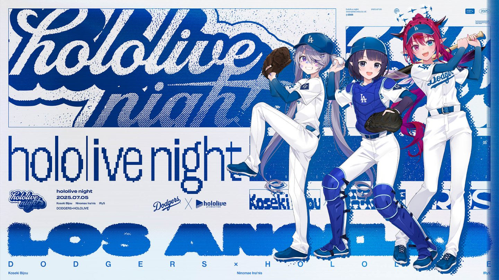
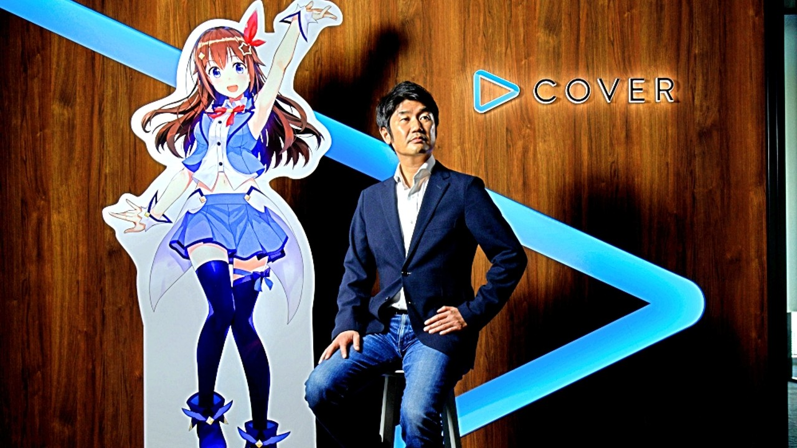
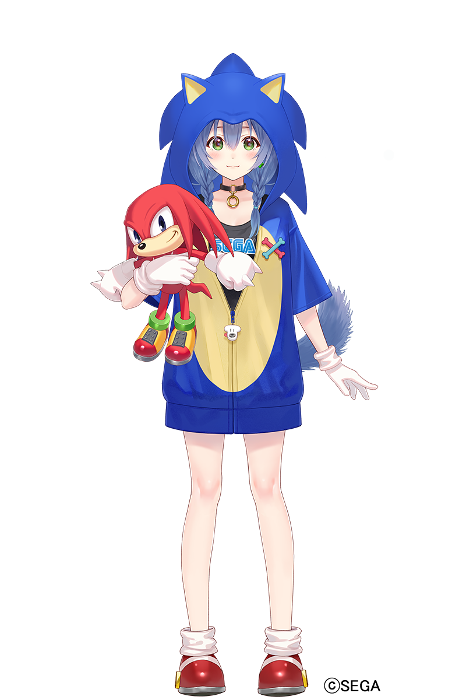

- What is a Virtual Youtuber?
-
A virtual YouTuber (バーチャルユーチューバー, bācharu yūchūbā) or VTuber (ブイチューバー, buichūbā)
is an online entertainer, typically a Japanese or English speaking YouTuber and/or live streamer,
who is represented by a (usually anime-inspired) digital avatar generated by computer graphics
such as Live2D.
Most vtubers also have their own lore and story background that is tied to their character.
Hololive's Biggest Acheivements
Hololive's Official Card Game |
 |
The hololive OFFICIAL CARD GAME (hOCG) is a competitive trading card game where players act as fans supporting their favorite talents—known as "Oshis"—to produce the most impressive live stage. Originally launched in Japan in September 2024, the official English edition was released in North America on July 11, 2025 |
Professional Sports Collaborations |
 |
Hololive established a recurring partnership with the Los Angeles Dodgers, featuring special merchandise and appearances by talents like Gawr Gura, Usada Pekora, and Hoshimachi Suisei. Shortly after, they had another collab with talents Ninomae Ina’nis, IRyS and Koseki Bijou. |
Entrepreneurial Excellence |
 |
CEO Motoaki "YAGOO" Tanigo was recognized by Forbes Japan as one of the country's Top 20 Entrepreneurs in 2022. |
Hit Musical Artist: Hoshimachi Suisei |
Hoshimachi Suisei's hit song "BIBBIDIBA" surpassed 120 million views on YouTube and won a Bronze Clio Music Award in 2025. She is also set to become the first Hololive member to perform a solo live at the legendary Nippon Budokan. She was also recently added to the game Fortnite along with a few of her songs. | |
Mainstream Media Presence: Inugami Korone |
 |
The agency has successfully bridged the gap to traditional media, such as Inugami Korone becoming an official brand ambassador for the Sonic the Hedgehog franchise in Japan. |